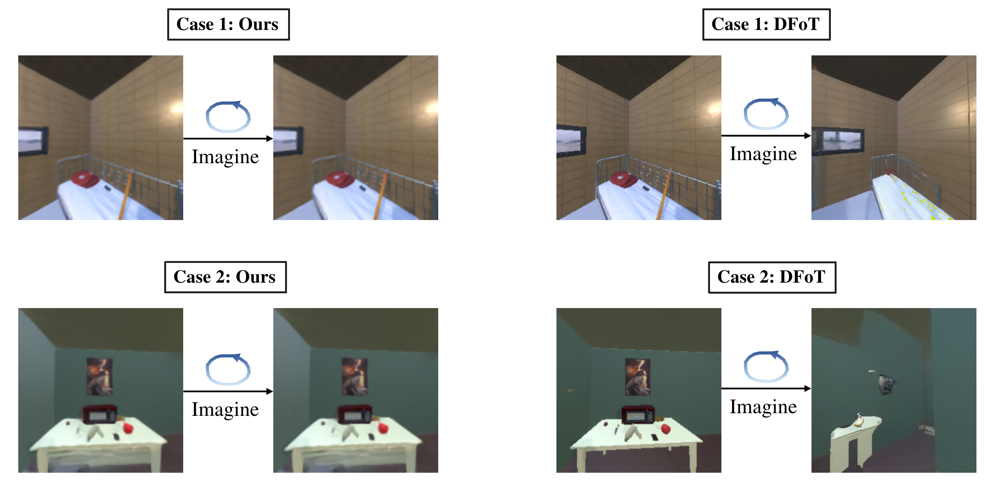
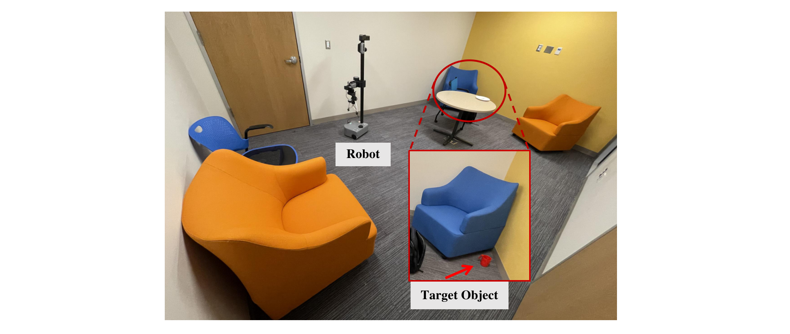

We compare the visual quality of 3D-Belief's predictions against state-of-the-art generative world models on unseen future viewpoints. Each panel shows, from left to right: Ground Truth, 3D-Belief (Ours), DFoT, and Gen3C (RE10K) / NWM (AI2-THOR). 3D-Belief produces predictions that are more spatially consistent and more faithful to the ground truth than the baselines.

We evaluate 3D-Belief on open-vocabulary object navigation tasks in the AI2-THOR simulator, where an agent must find a specified target object in a previously unseen environment.
We evaluate 3D-Belief on a real mobile manipulation platform (Hello Robot Stretch) in a mock apartment environment. Note that the environments, objects, and target descriptions are all unseen during training, making this a real-world open-vocabulary object navigation setting.

Open-Vocabulary Object Navigation: Search for a mug.
3D-Belief (Success)
Gemini-3.0 Agent (Failed - Collision)
In this work, we studied how generative world models can better support embodied reasoning and planning, and identified key capabilities for practical 3D belief modeling. We then proposed 3D-Belief, which predicts unseen regions in an explicit 3D representation from partial observations and updates this belief online. Experimental results on contextual reasoning and object navigation have shown that 3D-Belief improved both success rate and efficiency over existing generative world models.